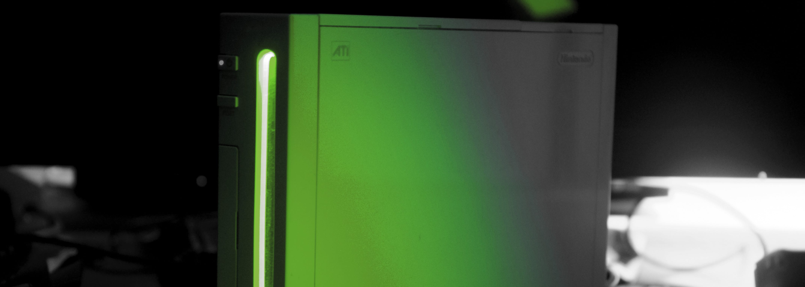

<p></p>
<div class="notice--info">
<p><strong>Öne Çıkanlar</strong></p>
<ul>
<li><a href="cios.html">cIOS</a></li>
<li><a href="kirby-tv.html">Kirby TV Channel</a></li>
<li><a href="riiconnect24-2.html">RiiConnect24</a></li>
<li><a href="wiilink.html">WiiLink</a></li>
<li><a href="wiimmfi-2.html">Wiimmfi</a></li>
</ul>
</div>
<div class="notice--primary">
<p><strong>RiiConnect24/Wiimmfi</strong></p>
<ul>
<li><a href="riiconnect24-2.html">RiiConnect24</a></li>
<li><a href="riiconnect24-vwii.html">RiiConnect24 vWii</a></li>
<li><a href="riiconnect24-dolphin.html">RiiConnect24 Dolphin</a></li>
<li><a href="riiconnect24-dns-update.html">RiiConnect24 DNS Update</a></li>
<li><a href="wiilink.html">WiiLink</a></li>
<li><a href="wiimmfi-2.html">Wiimmfi</a></li>
<li><a href="kirby-tv.html">Kirby TV Channel</a></li>
<li><a href="wiiwarepatcher.html">WiiWare Yamalayıcısı</a></li>
<li><a href="deleting-vffs.html">Deleting VFFs</a></li>
<li><a href="riiconnect24-batteryfix.html">Fixing FORE000006</a></li>
<li><a href="news000006.html">Fixing NEWS000006</a></li>
</ul>
<p><strong>Modlama 101</strong></p>
<ul>
<li><a href="bluebomb.html">BlueBomb</a></li>
<li><a href="bootmii.html">BootMii Yedekleme</a></li>
<li><a href="cios.html">cIOS</a></li>
<li><a href="dosanddonts.html">Dos and Don’ts of Wii Modding</a></li>
<li><a href="flashhax.html">FlashHax</a></li>
<li><a href="hbb.html">Homebrew Tarayıcısı</a></li>
<li><a href="hbc.html">Homebrew Channel</a></li>
<li><a href="letterbomb.html">LetterBomb</a></li>
<li><a href="priiloader.html">Priiloader</a></li>
<li><a href="str2hax.html">str2hax</a></li>
<li><a href="wiimodlite.html">Wii Mod Lite</a></li>
</ul>
<p><strong>Homebrew</strong></p>
<ul>
<li><a href="wiigsc.html">Wii Oyunu Kısayolu oluşturma</a></li>
<li><a href="dump-wads.html">How to dump Channels (WADs)</a></li>
<li><a href="dump-games-2.html">How to dump GameCube/Wii Games</a></li>
<li><a href="rssmii.html">RSSMii yükleme</a></li>
<li><a href="themes.html">Wii Menü Temaları yükleme</a></li>
<li><a href="themes-vwii.html">Installing Wii Menu Themes on vWii</a></li>
<li><a href="syscheck.html">Performing a SysCheck</a></li>
<li><a href="rssmii-remove.html">RSSMii’yi kaldırmak</a></li>
<li><a href="riitag.html">RiiTag</a></li>
<li><a href="update.html">Updating Wii Menu to v4.3</a></li>
<li><a href="usbloadergx.html">USB Loader GX</a></li>
<li><a href="wiibackupmanager.html">Wii Backup Manager</a></li>
<li><a href="wiiflow.html">WiiFlow</a></li>
</ul>
<p><strong>Wii mini</strong></p>
<ul>
<li><a href="hbc-mini.html">Wii mini’ye Homebrew Channel yükleme</a></li>
<li><a href="cios-mini.html">Wii mini’ye cIOS yükleme</a></li>
</ul>
<p><strong>Site</strong></p>
<ul>
<li><a href="../index.html">Ana sayfa</a></li>
<li><a href="baslarken.html">Başlangıç</a></li>
<li><a href="S.S.html">Sıkça Sorulan Sorular (S.S.S)</a></li>
<li><a href="donations-2.html">Bağışlar</a></li>
</ul>
</div>
